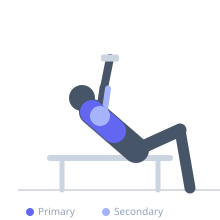

Exercise guide / Alternating Incline Dumbbell Press
Alternating Incline Dumbbell Press
The Alternating Incline Dumbbell Press is performed on an incline bench (30-45 degrees), targeting the clavicular head of the pectoralis major, with one arm pressing while the other holds the dumbbell in a fixed position near the upper chest. This anti-rotation, unilateral loading approach builds upper chest strength alongside core stability.
Primary muscles
pectoralis major clavicular
pectoralis major sternal
Secondary muscles
deltoid anterior
triceps lateral head
Stabilizers
internal oblique
external oblique
transverse abdominis
Equipment
Dumbbell (Fixed)
Adjustable Bench (Incline / Decline)


Starting position
- Set bench to 30-45 degrees. Hold a dumbbell in each hand at upper chest level. Both elbows bent at approximately 90 degrees.
Setup
- Adjust bench angle. Set up the same as an alternating flat dumbbell press but on the incline.
Steps
- Step 1: Press one dumbbell upward from upper chest to full lockout.
- Step 2: Return that arm to the starting position.
- Step 3: Press the other arm while holding the first at chest level.
- Step 4: Alternate for all prescribed reps.
Coaching cues
- Hips and shoulders stay square to the ceiling
- The resting arm is under constant isometric load — treat it seriously
Breathing
- Exhale as each arm presses. Inhale as it returns.
Range of motion
- Full extension per arm. Stationary arm at 90 degrees of elbow flexion.
Tempo
- 2-1-2-0 per arm
Common mistakes
- Steep angle (>45°) turning the movement into a shoulder press
- Torso rotation toward the pressing arm
Safety
- Keep the stationary dumbbell secure — do not let it drift
- Use a lighter load than bilateral incline press
Training
- hypertrophy: 8–15 reps
- hypertrophy: 3–4 sets
- Rest: {'hypertrophy': 90}